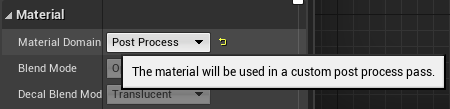

Foliage Deformation System
Getting your foliage to deform when colliding with things in Unreal Engine 4
If you followed the Shared Landscape Deformation System tutorial, you should have the preliminary parts of this built already. As to not repeat steps, this tutorial builds directly on top of that system. So, if you don't have that setup already, just find the tutorial on my portfolio page and do it! The Persistent Trails tutorial is the starting point for that tutorial, though, so do that if you'd like everything to be the same as this. At this point, we can leave trails, we have materials that seam into one another and look really good, but the foliage doesn't match. grass doesnt move when we step on it, and that just isnt right. So in this tutorial, we're going to cover how to make it so your foliage materials work similarly to your landscape materials.
Creating a Foliage Deformation System
Step 1
Finishing the write up for this tutorial! Check again soon!
Performance
A foliage deformation system is a bit more costly than a landscape deformation system.